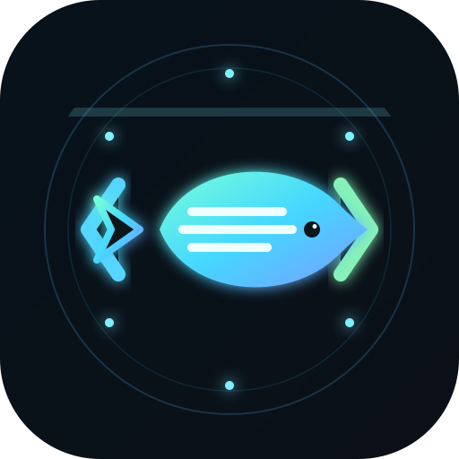

Natural-language Telegram entry
Plain text can route to ask, do, autopilot, note, schedule, digest, or project switch without command memorization.
OpenFish lets one trusted owner supervise local Codex work from Telegram. Commands, approvals, runtime state, and logs stay local.

Natural language maps to ask, do, autopilot, note, schedule, or project switch.
The owner stays in control while the execution loop keeps moving.
OpenFish is not trying to be a hosted agent platform. It is a pragmatic control layer for running Codex on your own machine while staying reachable from a phone.
Single-user workflows, project continuity, conservative local execution, and mobile-friendly supervision.
Multi-user bot hosting, public remote shells, or cloud orchestration layers.
Plain text can route to ask, do, autopilot, note, schedule, digest, or project switch without command memorization.
Code, approvals, logs, and runtime state remain on your machine so the owner keeps operational control.
Supervisor-worker loops can keep tasks moving, while the owner can pause, resume, stop, or take over at any point.
Use `openfish docker-init` when you want a tighter execution boundary around AI work.
OpenFish keeps the owner in the loop. Telegram is the surface. The local machine is where execution happens. Autopilot is just a structured supervisor-worker cycle with explicit intervention points.
Use plain language like “switch to ops project” or “check service health every 30 minutes”.
Intent routing selects ask, do, autopilot, note, schedule, or project switching with the right context.
The owner keeps authority over long-running work instead of losing visibility into the runtime.
/pause, /resume, /stop, /takeover
Inspects worker output, decides the next move, and escalates when human input is required.
Executes the current task, returns output, and waits for the next instruction from the supervisor.
The human is not expected to drive every round manually. The human stays observable, interruptible, and in charge.
OpenFish requires Python 3.12+. The packaged CLI covers install, configuration, checks, and startup.
$pip install openfish$openfish install$openfish configure$openfish check$openfish start